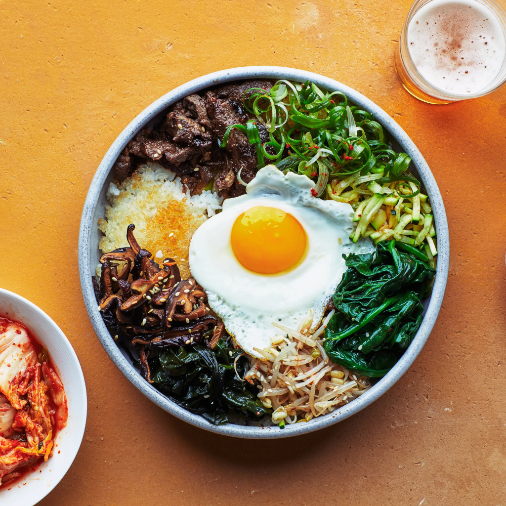

✨️ Bibimbap ✨️

Rice With Vegetables
비빔밥
Ingredients
1 English cucumber, cut into matchsticks
1/4 cup
gochujang
1 bunch fresh spinach, cut into thin strips
1 tablespoon soy sauce
2 teaspoons olive oil, divided
2 carrots, cut into matchsticks
1 clove garlic, minced
1 pinch red pepper flakes
1 pound thinly-sliced beef top round steak
4 large eggs
4 cups cooked white rice
4 teaspoons toasted sesame oil, divided
1 teaspoon sesame seeds
Steps
Stir together cucumber pieces and gochujang paste in a bowl; set aside.
Bring about 2 cups water to a boil in a large nonstick skillet and stir in spinach; cook until bright green and wilted, 2 to 3 minutes.
Drain spinach and squeeze out as much moisture as possible; set spinach aside in a bowl and stir in soy sauce.
Heat 1 teaspoon olive oil in a large nonstick skillet; cook and stir carrots until softened, about 3 minutes.
Stir in garlic and cook just until fragrant, about 1 minute. Stir in cucumber mixture; sprinkle with red pepper flakes. Set carrot mixture aside in a bowl.
Brown beef in a clean nonstick skillet over medium heat, about 5 minutes per side; set aside.
Heat remaining 1 teaspoon olive oil in another nonstick skillet over medium-low heat. Fry eggs just on one side until yolks are runny, but whites are firm, 2 to 4 minutes.
Divide cooked rice into 4 large serving bowls; top with spinach mixture, a few pieces of beef, and cucumber mixture. Place 1 egg atop each serving. Drizzle each bowl with 1 teaspoon sesame oil, a sprinkle of sesame seeds, and a small amount of gochujang paste if desired.